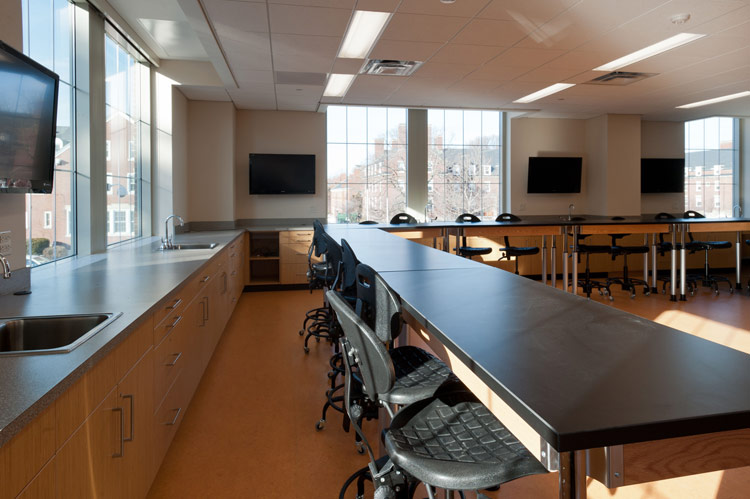

Lahore High School
Teachers
The teacher determines and shapes the character, ability, and future of children. You must have the proper knowledge to be a good teacher. A teacher should be disciplined and also friendly at the same time. He helps the students in differentiating between right and wrong and makes their mental growth.
English Teacher
A teacher who positively affected my attitude toward education was my middle school math teacher Ms. Ross. She made math easy by explaining the problems clearly as well as by giving shortcuts to solve problems. Additionally, she gave me confidence in my ability to do math as well as methods to use in the future. I believe she has positively affected my attitude towards education because she’s an example of a good teacher who has helped students improve their math skills.
Ms. Naveed made math simple by giving her students quicker ways to do problems. She also worked out the problems on the board step by step which made it easier to learn. When it comes to math I’m a visual learner and I need a detailed explanation. In addition, she explained everything clearly and was always willing to help her students.
Furthermore, while I was in her class I felt more confident in my math abilities. Math is not a subject I’m strong in so I usually need a really good teacher in order for me to understand the lesson. She taught me skills that I currently use and she made it easy to remember by turning math rules into chants.
To conclude, Ms. Naveed has positively impacted my opinion on education because she is one of the few exceptional math teachers I've had. Ms. Ross’ simple teaching method gave me the strategies to be successful in solving math problems. She also wouldn’t hesitate to help her students whenever they were confused. Overall she was a great teacher and pleasant person as well.
Enviroment Of Our School
